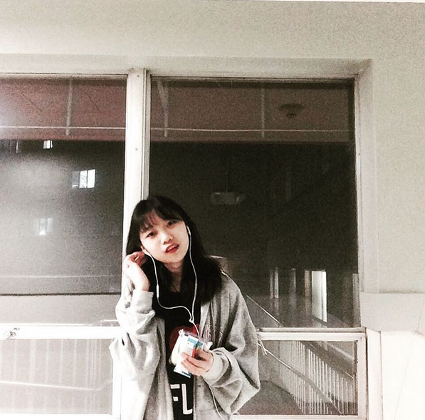

Personal Experiences of Fiona as a Popular Lady
Fiona Mao was born in winter in Nanjing,China. From a very young age, she already have had the talent for painting. Her parents was astonished. She was such a good student that, she was good at both drawing and study, and she also had a very good time playing with her friends. She was ambitious that she wants to become a well-known painter around the world.
Fiona Mao is a very different me that, I am kind of shy girl who is afraid of talking in front of the public, but on the contrary, Fiona is very talkative and she is eager to bring her enthusiasm to myriads of individuals around her. And listening to rock music is her big hobby. Oh man! I hate rock music. And many of her classmates and teachers still remember her talent for both art craftsmanship and creation.
Art Creativity Developed by her
As avant-garde artists, her fellows and she begin to seek for the novel definition, making process and value of art. She strives to get along with the populace, which is I am afraid of. Her newly-created art movement aims to reshape people’s outlook and horizon about art, and intensify each individual’s communication towards the huge crowd.
Fiona wants people she meets to join in her art activities. I don't know why, because one of my favourite thing is drawing along in my small apartment! Moreover, she wants her members not only regard themselves as assistants of her, but also as artists each has his or her aesthetic appreciation of art and decisions on making process.
Fiona's Art Manifesto about Civilism
In Fiona's perspective, Civilism is a new trend of making art of the times. The essence and virtue of individual actions could be amplified at the time when the individual is part of a community. The terminology Civilism comes from the commonly-used English word civil describing the characteristics and actions of the populace. It is terribly simple to comprehend. The art work of Civilism can be made through any materials she could imagine including garbage as talked above, or fiber, clothing, paper, rope etc. The work could be regarded as public installation in a large degree. Materials exist as independent elements that, they help to set off and convey the essential notion the art work is supposed to express.
Talking about the theme, Civilism aims to involve the populace together in the art production process in reaction to up-to-date current affairs:
- political disputation
- environmental issues
- the loss of quality of human lives
- psychological issues (sometimes owing to incidents of violence (such as the crime of campus & domestic violence and sexual assault)
In all, Fiona is to eager to feel the sense of achievement in engaging individuals with certain memories and experiences, to attract the public attention, and to appeal for the public’s help and actions. She would like to prompt empathy among the larger population, prompting them to pay close attention to some events.